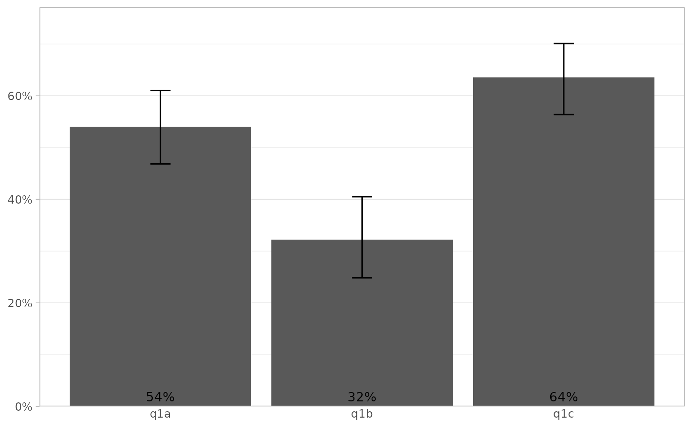
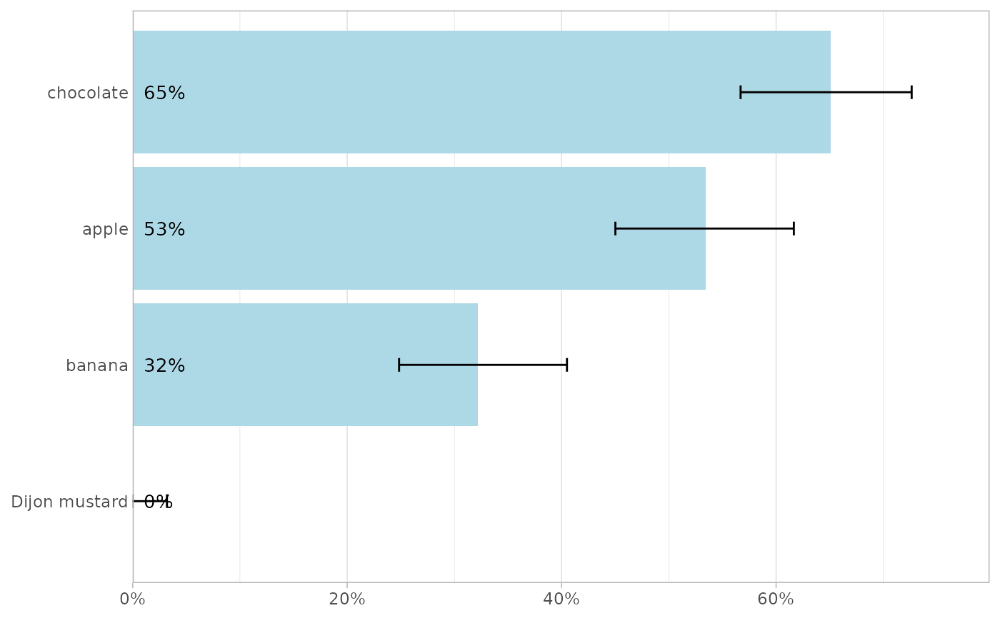
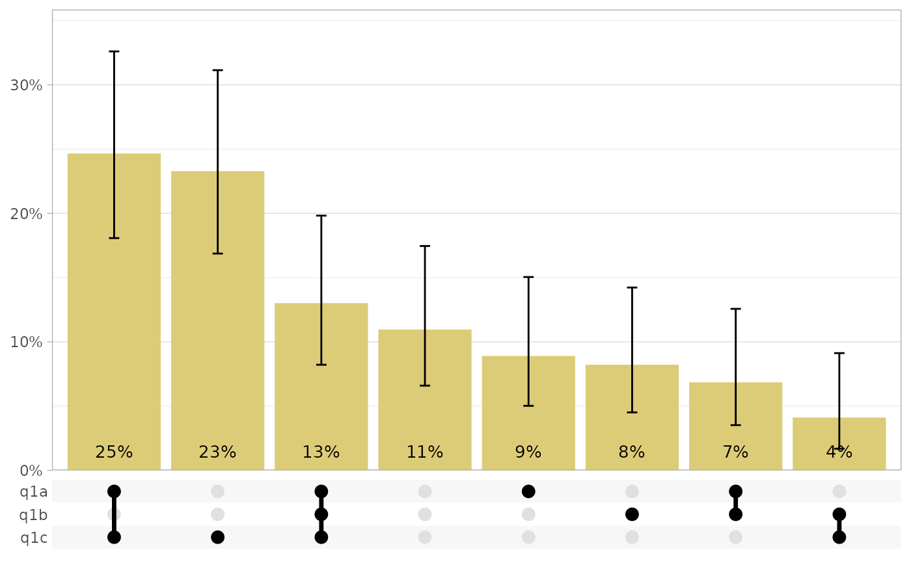
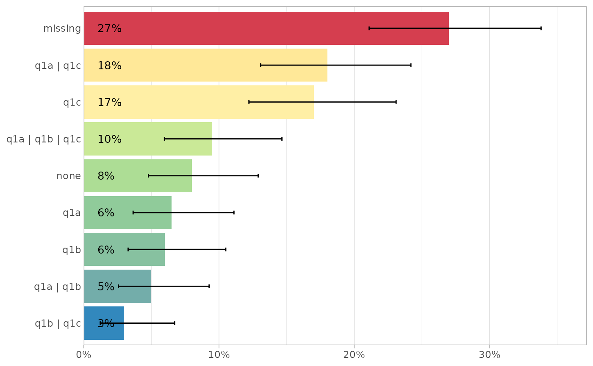
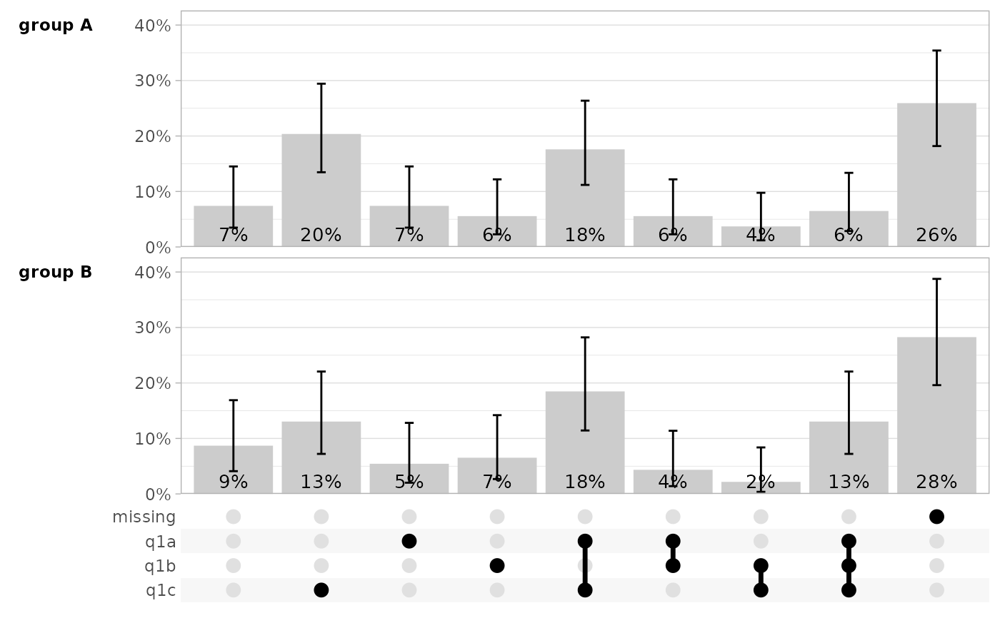
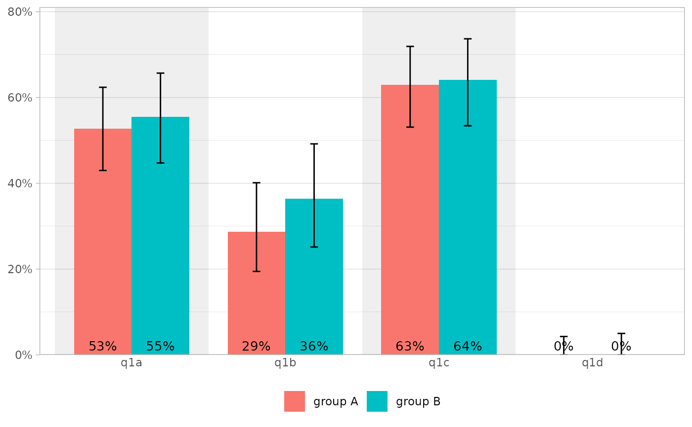
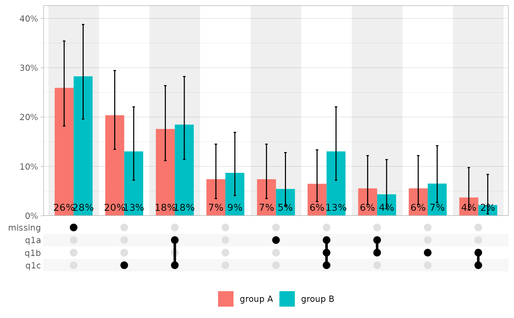
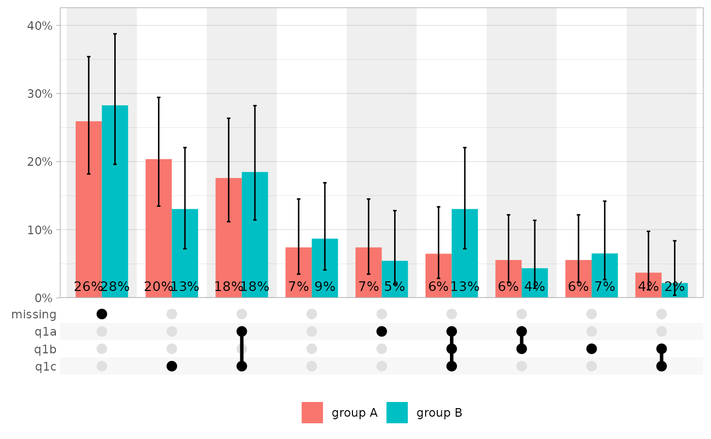

Considering a multiple answers question coded as several binary variables
(one per answer), plot the proportion of positive answers.
If combine_answers = FALSE, plot the proportion of positive answers of each
item, separately. If combine_answers = FALSE, combine the different answers
(see combine_answers()) and plot the proportion of each combination
(ggupset package required when
flip = FALSE).
See proportion() for more details on the way proportions and
confidence intervals are computed. By default, return a bar plot, but other
geometries could be used (see examples). If defined, use variable labels
(see examples).
Usage
plot_multiple_answers(
data,
answers = dplyr::everything(),
value = NULL,
by = NULL,
combine_answers = FALSE,
combine_sep = " | ",
missing_label = " missing",
none_label = "none",
drop_na = FALSE,
sort = c("none", "ascending", "descending", "degrees"),
geom = "bar",
...,
show_ci = TRUE,
conf_level = 0.95,
ci_color = "black",
show_labels = TRUE,
labels_labeller = scales::label_percent(1),
labels_size = 3.5,
labels_color = "black",
flip = FALSE,
return_data = FALSE
)
plot_multiple_answers_dodge(
data,
answers = dplyr::everything(),
value = NULL,
by,
combine_answers = FALSE,
combine_sep = " | ",
missing_label = " missing",
none_label = "none",
drop_na = FALSE,
sort = c("none", "ascending", "descending", "degrees"),
geom = c("bar", "point"),
width = 0.75,
...,
show_ci = TRUE,
conf_level = 0.95,
ci_color = "black",
show_labels = TRUE,
labels_labeller = scales::label_percent(1),
labels_size = 3.5,
labels_color = "black",
flip = FALSE
)Arguments
- data
A data frame, data frame extension (e.g. a tibble), or a survey design object.
- answers
<
tidy-select> List of variables identifying the different answers of the question.- value
Value indicating a positive answer. By default, will use the maximum observed value and will display a message.
- by
<
tidy-select> Optional list of variables to compare (using facets).- combine_answers
Should answers be combined? (see examples)
- combine_sep
Character string to separate combined answers.
- missing_label
When combining answers and
drop_na = FALSE, label for missing values.- none_label
When combining answers and
flip = TRUE, label when no item is selected.- drop_na
Should any observation with a least one
NAvalue be dropped?- sort
Should answers be sorted according to their proportion? They could also be sorted by degrees (number of elements) when combining answers.
- geom
Geometry to use for plotting proportions (
"bar"by default).- ...
Additional arguments passed to the geom defined by
geom.- show_ci
Display confidence intervals?
- conf_level
Confidence level for the confidence intervals.
- ci_color
Color of the error bars representing confidence intervals.
- show_labels
Display proportion labels?
- labels_labeller
Labeller function for proportion labels.
- labels_size
Size of proportion labels.
- labels_color
Color of proportion labels.
- flip
Flip x and y axis?
- return_data
Return computed data instead of the plot?
- width
Dodging width.
Note
If drop_na = TRUE, any observation with at least one NA value for one
item will be dropped.
If drop_na = FALSE and combine_answers = FALSE, NA values for a
specific answer are excluded the denominator when computing
proportions. Therefore, all proportions may be computed on different
population sizes.
If drop_na = FALSE and combine_answers = TRUE, any observation with at
least one NA value will be labeled with missing_label.
Examples
d <-
dplyr::tibble(
q1a = sample(c("y", "n"), size = 200, replace = TRUE),
q1b = sample(c("y", "n", "n", NA), size = 200, replace = TRUE),
q1c = sample(c("y", "y", "n"), size = 200, replace = TRUE),
q1d = sample("n", size = 200, replace = TRUE)
)
d |> plot_multiple_answers(q1a:q1c)
#> ! Automatically selected value: "y"
#> ℹ To remove this message, please specify `value`.

d |>
labelled::set_variable_labels(
q1a = "apple",
q1b = "banana",
q1c = "chocolate",
q1d = "Dijon mustard"
) |>
plot_multiple_answers(
value = "y",
drop_na = TRUE,
sort = "desc",
fill = "lightblue",
flip = TRUE
)

# \donttest{
d |>
plot_multiple_answers(
combine_answers = TRUE,
value = "y",
fill = "#DDCC77",
drop_na = TRUE
)
#> Warning: Using `size` aesthetic for lines was deprecated in ggplot2 3.4.0.
#> ℹ Please use `linewidth` instead.
#> ℹ The deprecated feature was likely used in the ggupset package.
#> Please report the issue at <https://github.com/const-ae/ggupset/issues>.

d |>
plot_multiple_answers(
combine_answers = TRUE,
value = "y",
flip = TRUE,
mapping = ggplot2::aes(fill = prop),
show.legend = FALSE
) +
ggplot2::scale_fill_distiller(palette = "Spectral")

d$group <- sample(c("group A", "group B"), size = 200, replace = TRUE)
d |>
plot_multiple_answers(
answers = q1a:q1d,
by = group,
combine_answers = TRUE,
sort = "degrees",
value = "y",
fill = "grey80"
)

d |>
plot_multiple_answers_dodge(q1a:q1d, by = group)
#> ! Automatically selected value: "y"
#> ℹ To remove this message, please specify `value`.

d |>
plot_multiple_answers_dodge(q1a:q1d, by = group, flip = TRUE)
#> ! Automatically selected value: "y"
#> ℹ To remove this message, please specify `value`.
 d |>
plot_multiple_answers_dodge(q1a:q1d, by = group, combine_answers = TRUE)
#> ! Automatically selected value: "y"
#> ℹ To remove this message, please specify `value`.

# }
d |>
plot_multiple_answers_dodge(q1a:q1d, by = group, combine_answers = TRUE)
#> ! Automatically selected value: "y"
#> ℹ To remove this message, please specify `value`.

# }